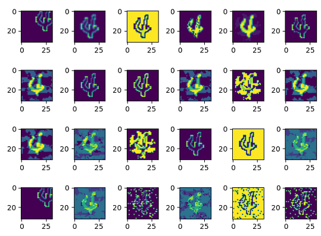

使用fuzz testing模块测试模型安全性

概述
传统软件的决策逻辑由代码逻辑决定，传统软件通过代码行覆盖率来判断当前测试是否充分，理想情况下覆盖率越高，代码测试越充分。然而，对于深度神经网络而言，程序的决策逻辑由训练数据、网络模型结构和参数通过某种黑盒机制决定，代码行覆盖率已不足以评估测试的充分性。需要根据深度网络的特点选择更为适合的测试评价准则，指导神经网络进行更为充分的测试，发现更多的边缘错误用例，从而确保模型的通用性、鲁棒性。
MindArmour的fuzz_testing模块以神经元覆盖率作为测试评价准则。神经元覆盖率，是指通过一组输入观察到的、激活的神经元数量和神经元输出值的范围。我们通过神经元覆盖率来指导输入变异，让输入能够激活更多的神经元，神经元值的分布范围更广，从而探索不同类型的模型输出结果、错误行为。
这里以LeNet模型，MNIST数据集为例，说明如何使用Fuzzer。
本例面向CPU、GPU、Ascend 910 AI处理器，目前仅支持GRAPH_MODE。你可以在这里下载完整的样例代码：https://gitee.com/mindspore/mindarmour/blob/r1.7/examples/ai_fuzzer/lenet5_mnist_fuzzing.py
实现阶段
导入需要的库文件
下列是我们需要的公共模块、MindSpore相关模块和fuzz_testing特性模块，以及配置日志标签和日志等级。
这里用的覆盖率指标是k分神经元覆盖率KMultisectionNeuronCoverage也可以选择支持的其他覆盖率指标：NeuronCoverage，TopKNeuronCoverage，NeuronBoundsCoverage，SuperNeuronActivateCoverage。
import numpy as np
from mindspore import Model
from mindspore import context
from mindspore import load_checkpoint, load_param_into_net
from mindarmour.fuzz_testing import Fuzzer
from mindarmour.fuzz_testing import KMultisectionNeuronCoverage
from mindarmour.utils import LogUtil
from examples.common.dataset.data_processing import generate_mnist_dataset
from examples.common.networks.lenet5.lenet5_net_for_fuzzing import LeNet5
LOGGER = LogUtil.get_instance()
TAG = 'Fuzz_testing'
LOGGER.set_level('INFO')
参数配置
配置必要的信息，包括环境信息、执行的模式。
context.set_context(mode=context.GRAPH_MODE, device_target="Ascend")
详细的接口配置信息，请参见context.set_context接口说明。
运用Fuzz Testing
建立LeNet模型，加载MNIST数据集，操作同模型安全
... # Lenet model model = Model(net) # get training data mnist_path = "../common/dataset/MNIST/" batch_size = 32 ds = generate_mnist_dataset(os.path.join(mnist_path, "train"), batch_size, sparse=False) train_images = [] for data in ds.create_tuple_iterator(): images = data[0].asnumpy().astype(np.float32) train_images.append(images) train_images = np.concatenate(train_images, axis=0) # get test data batch_size = 32 ds = generate_mnist_dataset(os.path.join(mnist_path, "test"), batch_size, sparse=False) test_images = [] test_labels = [] for data in ds.create_tuple_iterator(): images = data[0].asnumpy().astype(np.float32) labels = data[1].asnumpy() test_images.append(images) test_labels.append(labels) test_images = np.concatenate(test_images, axis=0) test_labels = np.concatenate(test_labels, axis=0)
Fuzzer参数配置。
设置数据变异方法及参数。支持同时配置多种方法，目前支持的数据变异方法包含两类：
自然扰动样本生成方法：
仿射变换类方法：Translate、Scale、Shear、Rotate、Perspective、Curve；
模糊类方法：GaussianBlur、MotionBlur、GradientBlur；
亮度调整类方法：Contrast、GradientLuminance;
加噪类方法：UniformNoise、GaussianNoise、SaltAndPepperNoise、NaturalNoise。
基于对抗攻击的白盒、黑盒对抗样本生成方法：FGSM（FastGradientSignMethod）、PGD（ProjectedGradientDescent）、MDIIM（MomentumDiverseInputIterativeMethod）。
数据变异方法中一定要包含基于图像像素值变化的方法。
前两种类型的图像变化方法，支持用户自定义配置参数，也支持算法随机选择参数。用户自定义参数配置范围请参考:https://gitee.com/mindspore/mindarmour/tree/r1.7/mindarmour/natural_robustness/transform/image 中对应的类方法。算法随机选择参数，则
params设置为'auto_param': [True]，参数将在推荐范围内随机生成。基于对抗攻击方法的参数配置请参考对应的攻击方法类。
下面是变异方法及其参数配置的一个例子：
mutate_config = [ {'method': 'GaussianBlur', 'params': {'ksize': [1, 2, 3, 5], 'auto_param': [True, False]}}, {'method': 'MotionBlur', 'params': {'degree': [1, 2, 5], 'angle': [45, 10, 100, 140, 210, 270, 300], 'auto_param': [True]}}, {'method': 'GradientBlur', 'params': {'point': [[10, 10]], 'auto_param': [True]}}, {'method': 'UniformNoise', 'params': {'factor': [0.1, 0.2, 0.3], 'auto_param': [False, True]}}, {'method': 'GaussianNoise', 'params': {'factor': [0.1, 0.2, 0.3], 'auto_param': [False, True]}}, {'method': 'SaltAndPepperNoise', 'params': {'factor': [0.1, 0.2, 0.3], 'auto_param': [False, True]}}, {'method': 'NaturalNoise', 'params': {'ratio': [0.1, 0.2, 0.3], 'k_x_range': [(1, 3), (1, 5)], 'k_y_range': [(1, 5)], 'auto_param': [False, True]}}, {'method': 'Contrast', 'params': {'alpha': [0.5, 1, 1.5], 'beta': [-10, 0, 10], 'auto_param': [False, True]}}, {'method': 'GradientLuminance', 'params': {'color_start': [(0, 0, 0)], 'color_end': [(255, 255, 255)], 'start_point': [(10, 10)], 'scope': [0.5], 'pattern': ['light'], 'bright_rate': [0.3], 'mode': ['circle'], 'auto_param': [False, True]}}, {'method': 'Translate', 'params': {'x_bias': [0, 0.05, -0.05], 'y_bias': [0, -0.05, 0.05], 'auto_param': [False, True]}}, {'method': 'Scale', 'params': {'factor_x': [1, 0.9], 'factor_y': [1, 0.9], 'auto_param': [False, True]}}, {'method': 'Shear', 'params': {'factor': [0.2, 0.1], 'direction': ['horizontal', 'vertical'], 'auto_param': [False, True]}}, {'method': 'Rotate', 'params': {'angle': [20, 90], 'auto_param': [False, True]}}, {'method': 'Perspective', 'params': {'ori_pos': [[[0, 0], [0, 800], [800, 0], [800, 800]]], 'dst_pos': [[[50, 0], [0, 800], [780, 0], [800, 800]]], 'auto_param': [False, True]}}, {'method': 'Curve', 'params': {'curves': [5], 'depth': [2], 'mode': ['vertical'], 'auto_param': [False, True]}}, {'method': 'FGSM', 'params': {'eps': [0.3, 0.2, 0.4], 'alpha': [0.1], 'bounds': [(0, 1)]}}, {'method': 'PGD', 'params': {'eps': [0.1, 0.2, 0.4], 'eps_iter': [0.05, 0.1], 'nb_iter': [1, 3]}}, {'method': 'MDIIM', 'params': {'eps': [0.1, 0.2, 0.4], 'prob': [0.5, 0.1], 'norm_level': [1, 2, '1', '2', 'l1', 'l2', 'inf', 'np.inf', 'linf']}} ]
初始化种子队列，种子队列中的每个种子，包含2个值：原始图片、图片标签。这里取100个样本作为初始种子队列。
# make initial seeds initial_seeds = [] for img, label in zip(test_images, test_labels): initial_seeds.append([img, label]) initial_seeds = initial_seeds[:100]
实例化k分神经元覆盖率指标类，并计算Fuzz测试前的k分神经元覆盖率。
coverage = KMultisectionNeuronCoverage(model, train_images, segmented_num=100, incremental=True) kmnc = coverage.get_metrics(test_images[:100]) print('KMNC of initial seeds is: ', kmnc)
结果：
KMNC of initial seeds is: 0.3152149321266968
Fuzz测试。
model_fuzz_test = Fuzzer(model) fuzz_samples, true_labels, fuzz_preds, fuzz_strategies, metrics_report = model_fuzz_test.fuzzing(mutate_config, initial_seeds, coverage, evaluate=True, max_iters=10,mutate_num_per_seed=20)
实验结果。
fuzzing的返回结果中包含了5个数据：fuzz生成的样本fuzz_samples、生成样本的真实标签true_labels、被测模型对于生成样本的预测值fuzz_preds、 生成样本使用的变异方法fuzz_strategies、fuzz testing的评估报告metrics_report。用户可使用这些返回结果进一步的分析模型的鲁棒性。这里只展开metrics_report，查看fuzz testing后的各个评估指标。
if metrics: for key in metrics: LOGGER.info(TAG, key + ': %s', metrics[key])
Fuzz测试后结果如下：
Accuracy: 0.445 Attack_success_rate: 0.375 coverage_metrics: 0.43835972850678734
Fuzz测试前种子的KMNC神经元覆盖率为31.5%，Fuzz后，KMNC神经元覆盖率为43.8%，神经元覆盖率提升，样本的多样性提升。Fuzz后，模型对于Fuzz生成样本的准确率为44.5%，使用了对抗攻击方法的样本，攻击成功率为37.5%。由于初始化种子、变异方法和相应的参数均为随机选择的，结果有一定的浮动是正常的。
原始图片：

Fuzz生成的变异图片：
